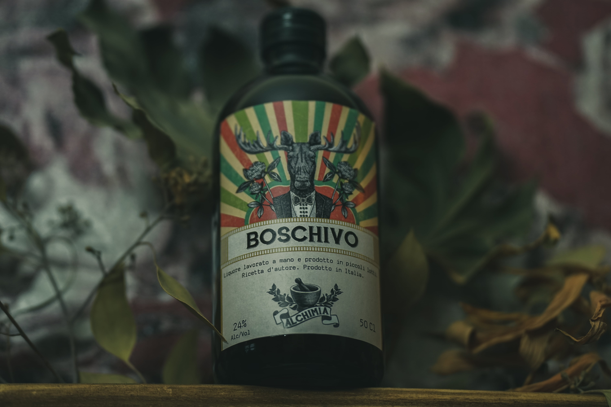

Boschivo

Freschissimo liquore di produzione artigianale composto solamente da ingredienti di origine 100% naturale e di prima qualità. La menta conferisce un'intensa freschezza iniziale e si lega in maniera impeccabile alla radice di liquirizia, la quale domina tutto il finale e dona una lunga persistenza. Queste due sole spezie combinate danno origine ad un liquore minimale ma complesso, perfetto da bere dopo pasto.
Floreale
Fruttato
Speziato
Balsamico
Erbaceo
Erbe e spezie
Foglie di menta, radice di liquerizia
Desideri acquistare i nostri prodotti?
Inserisci la tua email per essere contattato.